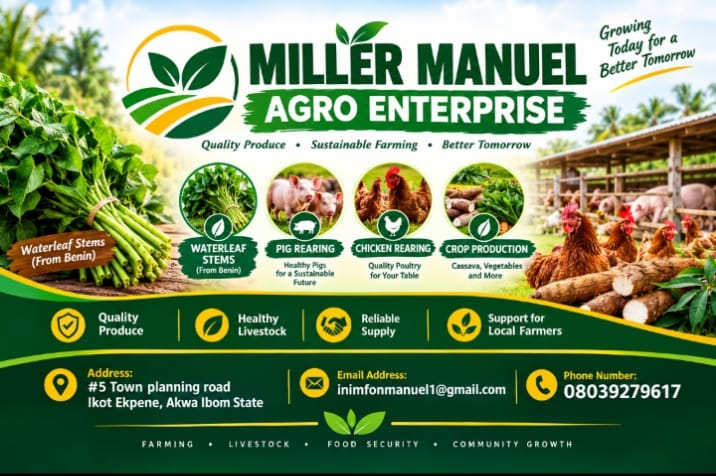

ABOUT OUR BUSINESS
Rooted in farming. Focused on service.
We connect customers with everyday agricultural essentials: waterleaf stems and bagged manure.

WHO WE ARE
Miller Manuel Agro Enterprise
Miller Manuel Agro Enterprise is an agro-focused business based in Ikot Ekpene, Akwa Ibom State. Our website makes it easier for customers to learn about our products and contact us before ordering.
We serve people looking for waterleaf stems for cooking and bagged manure for gardening or farming. We aim to make product information straightforward and the buying process convenient.
Our mission
To provide accessible agricultural products and friendly service that support households, growers and local farming communities.
Our vision
To grow into a dependable local source for useful farm and produce essentials, contributing to food security and community growth.
Freshness
Careful handling of produce.
Trust
Clear communication with customers.
Growth
Supporting growers and gardeners.
We would be happy to hear from you.
Ask a question or check current product availability.